Orchestrate omnichannel AI agents with Foundry and Twilio
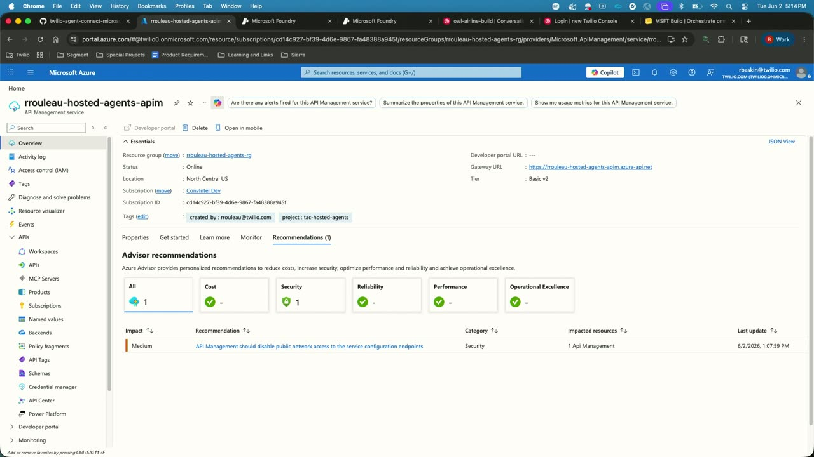
Official description
Customer conversations often lose context across channels, making it difficult to build cohesive AI agents. Learn how to close the gap with Microsoft Foundry and Twilio. Use Foundry to establish models, voice, and agents on Azure. Add Twilio for cross-channel memory, real-time orchestration, and conversation intelligence, all wired by the Agent Connect SDK. See a demo and learn patterns for building scalable, real-time workflows. Seating for this session is first-come, first-served. Add it to your schedule to plan your day and arrive early to secure a spot.
Summary
Overview
A product-focused walkthrough of the native integration between Microsoft Foundry and Twilio Agent Connect, aimed at building omnichannel AI agents that retain customer context across voice, SMS, and chat. The session frames the problem of cross-channel "memory loss" in customer experiences and demonstrates a serverless deployment pattern using Foundry hosted agents, culminating in a live airline-support demo that carries context from a voice call into an SMS conversation.
Key announcements
- Twilio Agent Connect (TAC) (~03:17): A newly launched open-source SDK with two connectors—one to Twilio, one to Foundry—that handles real-time conversation management, persistent memory, and multi-channel orchestration to create a single agent across all channels.
- Hosted agents deployment option (~06:18): Following Microsoft's public preview of hosted agents with WebSocket support and the Invocations API, TAC switched to a fully serverless deployment that gives each session its own dedicated sandbox, with scale-to-zero and no idle cost.
- Cross-channel shared memory demo (~13:48): A live demonstration showing an agent remembering a seat change made on a voice call when the same customer later texts via SMS, resolved through profile resolution on the phone number.
Topics covered
- The gap between surging AI spend and weak measured returns in customer experience.
- Cross-channel "amnesia" as the root cause of disjointed customer support interactions.
- Complementary division of labor: Twilio handles channels, regions, and shared memory; Foundry provides models, Voice Live API, and the agent framework.
- Why traditional stateless compute (container apps) is ill-suited to long-lived, stateful, per-user agent sessions, including security and isolation concerns.
- The six benefits of hosted agents: per-session sandboxing, predictable cold starts, scale-to-zero, state persistence, unique agent identity, and built-in observability/evals/policies.
- Simplified architecture: HTTP events through an API Management Gateway that validates Twilio signatures, adds auth, and maps each Twilio conversation ID to a hosted agent session ID.
- TAC's two components: the agent framework connector (session persistence via Cosmos DB, contextual memory injection) and the Voice Live connector (streaming inference over WebSockets).
- Deployment via the
azd upcommand, which provisions API Management plus a hosted agent running TAC. - Webhook configuration in Twilio for voice and SMS, and the distinction between the public API Management URL and the non-public hosted agent URL.
- Out-of-the-box traces, monitoring, evals, and a playground; customization of prompts, knowledge sources, tools, and models.
- Relationship between the new integration and Twilio's existing Conversation Relay product.
Notable quotes
"The traditional customer experience actually suffers amnesia across channels and that leads to a very disjointed end customer experience." — Rachel Baskin
"Traditional compute was designed for stateless web services and APIs where multiple users can share the same instance, but agents need long lived stateful per user sessions." — Rachel Baskin
"It's really not hard now to get an agent. The hard part is actually making it enterprise ready." — Rachel Baskin
Products and tools mentioned
- Microsoft Foundry (Azure AI Foundry)
- Twilio Agent Connect (TAC)
- Foundry hosted agents
- Microsoft agent framework
- Foundry Voice Live API
- Twilio Conversation Relay
- Azure Container Apps
- Azure Cosmos DB
- Azure API Management
- Azure Developer CLI (
azd up) - GPT-5 mini [inferred]
- Python / pip
Speakers featured
- Rachel Baskin — Product Manager, Twilio
Follow-up resources
- The open-source Twilio Agent Connect for Microsoft repository on GitHub (presented via on-screen QR code and link; specific URL not stated in the transcript).
Frames
{kind=link}
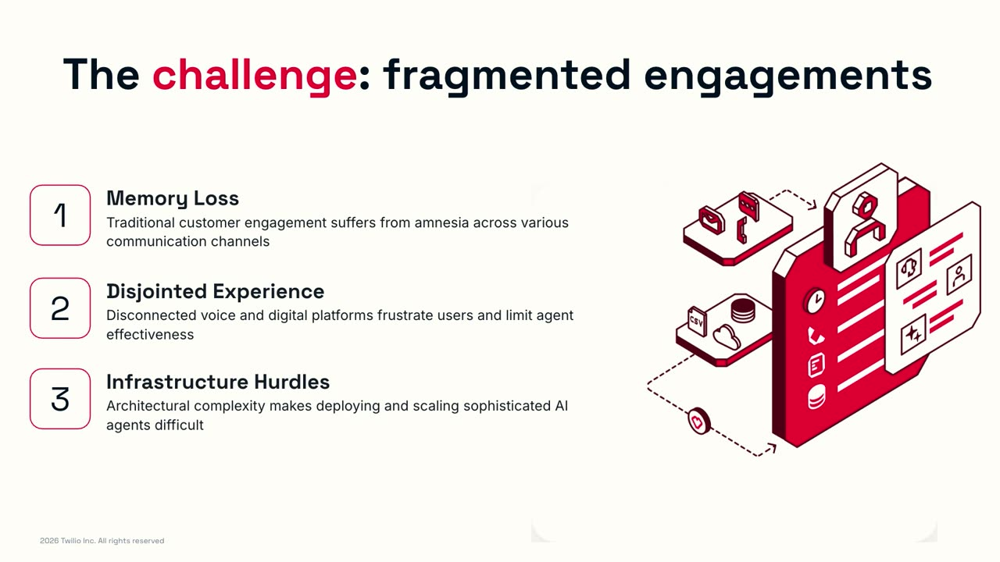
{kind=link}
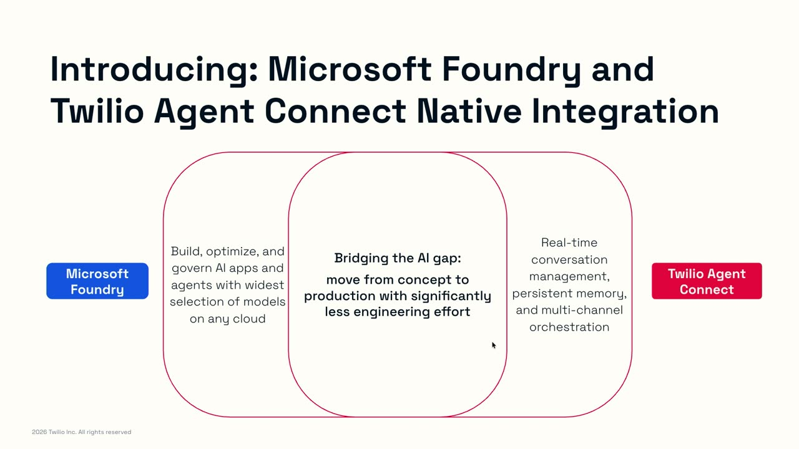
{kind=link}
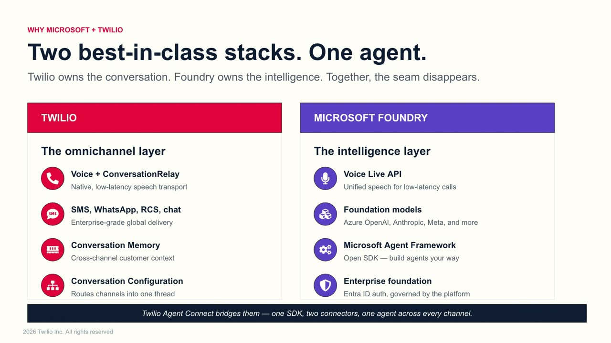
{kind=link}
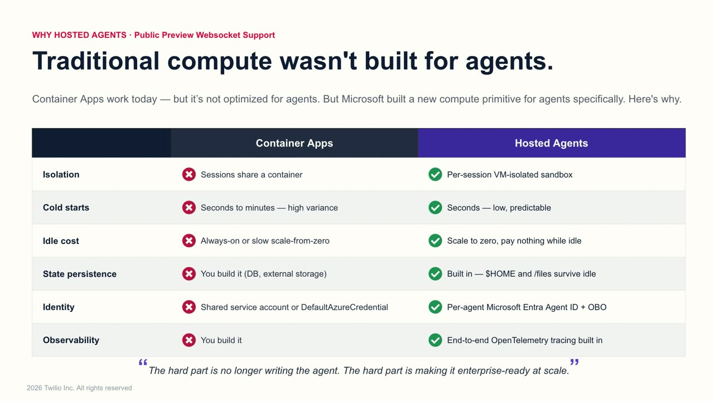
{kind=link}
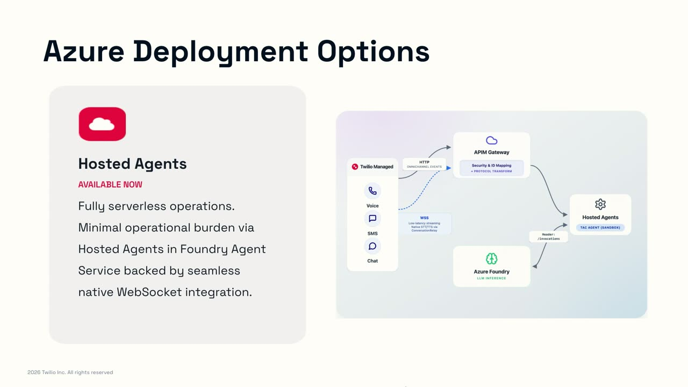
{kind=link}
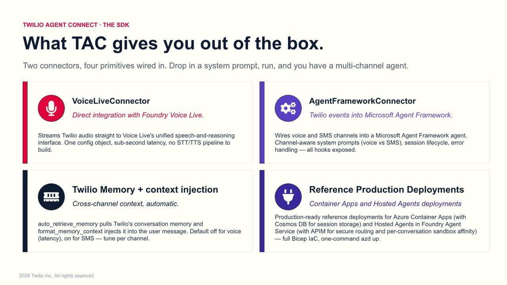
{kind=link}
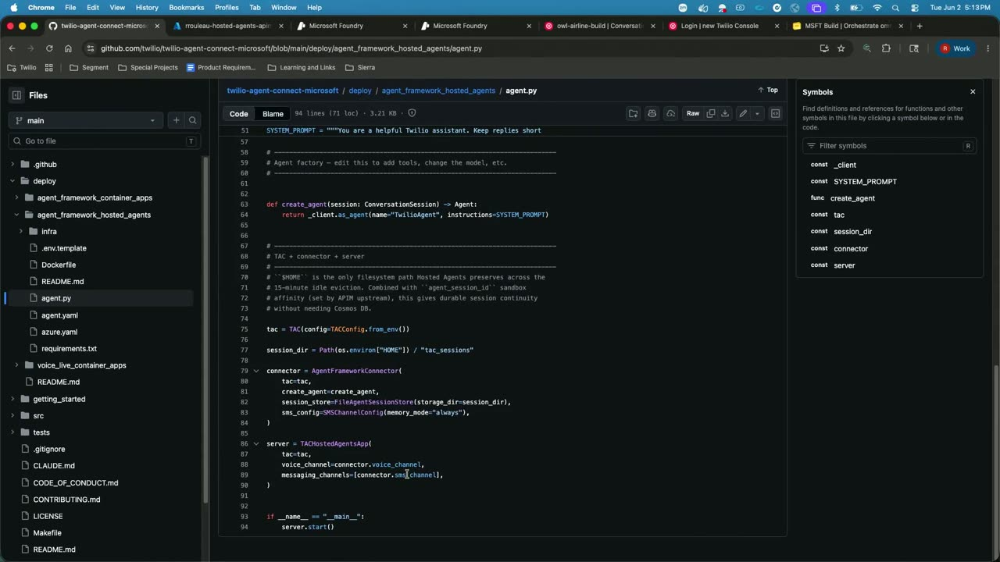
{kind=link}
{kind=link}
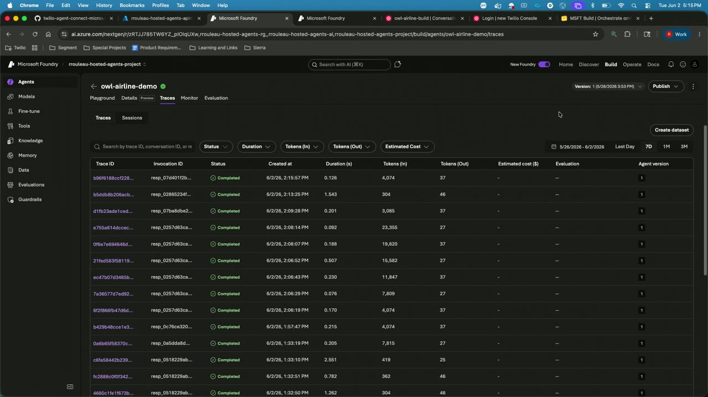
{kind=link}
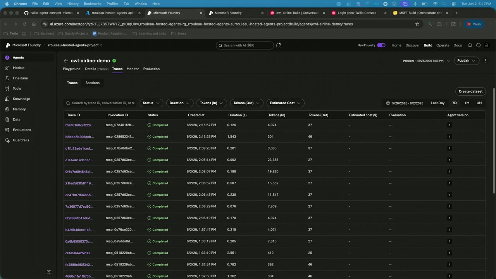
{kind=link}
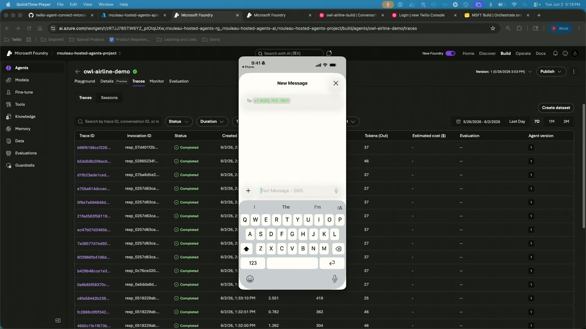
{kind=link}
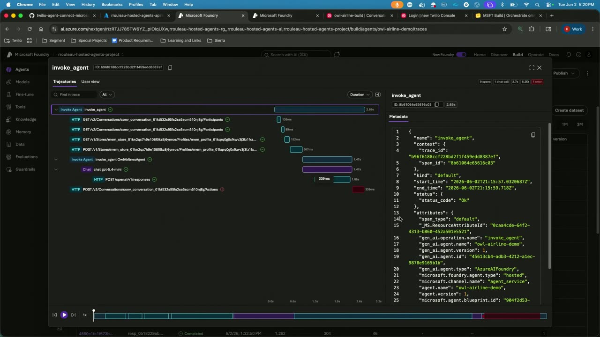
{kind=link}
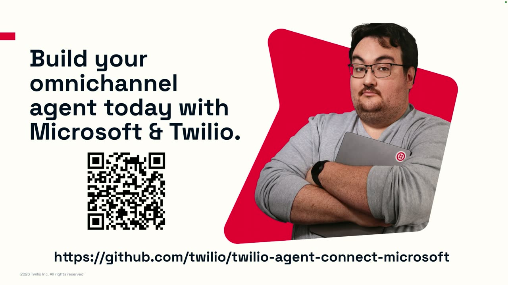
{kind=link}
{kind=link}
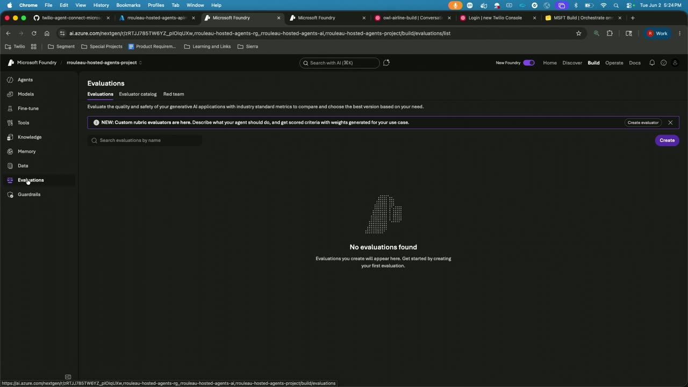
Frames around each announcement
References
Transcript
Show / hide transcript (27,727 chars)
[00:00:04] Should I be starting? [00:00:06] Am I supposed to start? [00:00:06] Oh, good. [00:00:07] Sorry, I was waiting. [00:00:08] OK. [00:00:08] Hey, everybody. [00:00:09] Good to see all of you. [00:00:12] My name is Rachel. [00:00:13] I'm a product manager at Twilio. [00:00:15] I'm super excited to talk to you today about building [00:00:20] Omni channel AI agents with Twilio and Foundry. [00:00:25] All right, let's go. [00:00:27] There we go. [00:00:28] OK, so why are we all here? [00:00:30] What are we all talking about? [00:00:31] As we all know, global AI spend has surged. [00:00:35] So according to Gardner, 44% year over year. [00:00:38] We've all seen it. [00:00:39] We've all been asked how are we using AI in [00:00:41] our everyday workflows? [00:00:42] How are we building AI products for our customers? [00:00:44] But the interesting thing is that while this spend has [00:00:48] surged, we're still struggling to find value from AI. [00:00:51] So you can see 56% of leaders say they're getting [00:00:55] nothing out of AI, 6%, only 6% of brands improved [00:00:58] their CX scores in 2025. [00:01:00] So there's this huge increase in monetary investment, but there [00:01:04] isn't really the results yet, right? [00:01:07] Even companies are saying they're not finding value. [00:01:09] And then the end consumers who were building these experiences [00:01:12] for, we're not seeing them enjoying those experiences that they're [00:01:16] having with businesses. [00:01:20] So why, what is the challenge? [00:01:22] So what we've seen at Twilio is that there are [00:01:25] a few challenges, but the first being memory loss. [00:01:28] So having a conversation with a customer, you know, an [00:01:31] agent, whether that's virtual or a human agent or interacting [00:01:35] with a business digitally, there's a, there's amnesia, right? [00:01:38] Doesn't remember that you had an e-mail last week, that [00:01:41] you had a phone call this week or that you, [00:01:42] you know, searched its website, you know, 3 weeks ago. [00:01:45] So the traditional customer experience actually suffers amnesia across channels [00:01:49] and that leads to a very disjointed end customer experience. [00:01:53] I'm sure everyone here has had a terrible customer support [00:01:56] experience where they're talking to someone, maybe they got transferred, [00:01:59] they're repeating the same thing over and over again, or [00:02:01] they call, they get disconnected or you call and that [00:02:04] you know that your flight is delayed and the agents [00:02:06] like, hey, what do you need help with? [00:02:08] And you're like, my flight's late. [00:02:08] You just texted me that my flight was delayed. [00:02:10] Why don't you know that my flight's delayed? [00:02:12] So it's leading to disjointed experience. [00:02:14] And then also it's really hard. [00:02:15] I don't know how many people, how many people in [00:02:17] the room have tried to build a very virtual agent. [00:02:18] They've actually put in front of customers anybody maybe. [00:02:24] So it's it's actually kind of complex to actually deploy [00:02:28] and scale an AI agent that's Omni channel, has memory, [00:02:31] has the right knowledge, has the right data. [00:02:33] It isn't really that simple to do. [00:02:36] So these are the challenges that we see and given [00:02:39] these challenges, This is why, you know, we have launched [00:02:43] really like our Microsoft Foundry and we call Twilio Agent [00:02:46] Connect native integration. [00:02:48] And I'm going to show you an actual demo of [00:02:50] this today. [00:02:52] But really like the reason that we decided to build [00:02:55] this was because of those challenges that you just saw [00:02:58] and getting to and trying to get to production with [00:03:00] lower engineering efforts. [00:03:02] So I'm like the foundry side, you know, they have [00:03:04] the ability to build and optimize and govern AI agents [00:03:08] out-of-the-box with a vast selection of models you can choose. [00:03:11] And on the Twilio side, we handled the real time [00:03:14] conversation management, persistent memory in the multi channel orchestration with [00:03:17] a new product that we launched a couple weeks ago. [00:03:19] It's called Twilio Agent Connect. [00:03:21] And the reason we're bringing these things together is really [00:03:24] to move from conception to production with less engineering effort [00:03:28] and to have a real production ready agent. [00:03:31] So what is this? [00:03:33] Sorry, this is so. [00:03:35] So why did we actually do this? [00:03:37] You know, there are two best in class platforms and [00:03:40] between them we're trying to create one agent. [00:03:43] So they're not overlapping platforms, they're really complementary. [00:03:46] So Twilio on the left handles every single channel with [00:03:49] every single region with shared customer memory across them. [00:03:53] And then with Foundry, you get the intelligence, the voice [00:03:57] live API, the foundational models, the agent framework SDK. [00:04:01] And with Twilio Agent Connect, this really bridges them. [00:04:05] So it's one open source SDK with two connectors, 1 [00:04:08] to Twilio and one to Foundry to create one agent [00:04:11] across all your channels. [00:04:15] All right, so let's talk about how you actually can [00:04:18] deploy this. [00:04:19] So we first went out the gate with container apps. [00:04:22] So container apps gives you full control over your agent [00:04:25] runtime, It's on the production grade Azure infrastructure and you [00:04:30] have the session persistence, Cosmo DB connection, etcetera. [00:04:34] So you can kind of see how this works from [00:04:36] an architectural perspective on the right here where you have [00:04:39] your Twilio channels on the left, you know, connecting with [00:04:42] web sockets to your container apps, you connect to Azure [00:04:45] Cosmos DB for your state management and it goes to [00:04:47] Foundry and calls your models. [00:04:49] This is kind of how we first launched this, but [00:04:51] what we saw was that or what we learned was [00:04:54] that, you know, traditional compute with container apps wasn't actually [00:04:57] built for agents. [00:04:59] Traditional compute was designed for stateless web services and APIs [00:05:03] where multiple users can share the same instance, but agents [00:05:07] need long lived stateful per user sessions. [00:05:09] So imagine a scenario where you have customer A and [00:05:12] customer B calling the same agent. [00:05:14] That agent's writing files, it's executing code, it's accessing credentials. [00:05:19] You have a security and isolation issue so that you [00:05:21] need to solve, right. [00:05:22] You don't want customer A to somehow access customer B's [00:05:25] information. [00:05:26] So that's why Microsoft actually invested in hosted agents, whoops, [00:05:31] as the new compute primitive for this exact pattern. [00:05:35] And there's six key benefits that you can see on [00:05:37] the screen here. [00:05:38] So every session get gets its own dedicated sandbox. [00:05:41] Cold starts are predictable. [00:05:43] You can scale to zero and pay nothing while your [00:05:45] agent's not doing anything. [00:05:46] You have the state persistence, you have a unique agent [00:05:50] identity, and then you also get out-of-the-box observability evaluations like [00:05:54] policies. [00:05:55] And I'll show you some of that today in the [00:05:57] demo as well. [00:05:59] And so it's like it's really not hard now to [00:06:01] get an agent. [00:06:01] The hard part is actually making it enterprise ready. [00:06:04] So because, you know, Microsoft actually launched, you know, hosted [00:06:08] agents and went into public preview with Websocket support and [00:06:12] the Invocations API recently, we were able to switch our [00:06:16] deployment option to hosted agents. [00:06:18] So what is our deployment now? [00:06:21] What is our deployment now look like? [00:06:25] We now have a deployment option with hosted agents. [00:06:27] We still have our container app option, but this is [00:06:30] a much better solution. [00:06:31] It's fully serverless, minimal operation burden, and you get everything [00:06:34] that I just mentioned on the previous slide with hosted [00:06:37] agents with a native web sock integration, web sock integration. [00:06:40] So I don't know if you remember the last architecture, [00:06:43] but this one is, is very simplified, right? [00:06:45] Twilio handles the voice, SMS and chat events flow over [00:06:49] HTTP into the API Management Gateway on the top, which [00:06:52] validates the Twilio signature it adds off and it maps [00:06:56] each comp Twilio conversation ID to a hosted agent session [00:07:01] ID, giving every conversation its own dedicated sandbox. [00:07:06] And from there, it routes into the hosted agent sandbox [00:07:09] where your agent logic runs and it connects to Microsoft [00:07:13] Azure Foundry for your model inference, fully serverless, no compute, [00:07:18] no scaling, no idle cost. [00:07:20] This is really a much better solution when it comes [00:07:22] to deploying agents. [00:07:24] And the one thing I will note is you'll see [00:07:26] on the bottom, there's like HTTP for the Omni channel [00:07:29] events and then the web socket hosting. [00:07:32] So that's where the, yeah, the low latency web socket [00:07:34] hosting that's native for our voice channels, how we make [00:07:37] the connection for voice specifically. [00:07:42] So before we go into the demo, what actually is [00:07:45] TAC? [00:07:46] So why do you need this other thing in between, [00:07:49] you know, your Twilio channels and your hosted agents? [00:07:52] Really what TAC is, it's a connector. [00:07:55] And so it, there's two main components. [00:07:57] There's the agent framework connector, which is on the top [00:08:00] right, which routes your Twilio events across voice and messaging [00:08:03] directly into the Microsoft agent framework. [00:08:06] It also handles that session, session persistence with Cosmo DB [00:08:10] and the contextual memory injection. [00:08:12] And then we also have the Voice Live connector, which [00:08:15] provides the direct integration with Foundry Voice Live. [00:08:18] So that does the streaming inference over Websockets and it [00:08:21] makes it really fast. [00:08:22] So you'll hear during the demo today, hopefully if the [00:08:24] sound works well, how quickly the voice call works and [00:08:26] how quickly it responds. [00:08:28] So yeah, so that's kind of everything. [00:08:30] I had to show you it on slides. [00:08:32] And so I'm going to hopefully spend the rest of [00:08:36] this time going over a live demo. [00:08:39] All right, all right, this is going to be a [00:08:44] little tough, but let me just get this going. [00:08:49] OK, So let me show you how this actually works. [00:08:52] I'm going to 1st pop up our actually, I can [00:08:54] just look right here. [00:08:55] I'm first going to pop up. [00:08:56] This is our our open source repo. [00:09:00] So it's called Tulu Agent Connect to Microsoft and you [00:09:03] can definitely take a look at this. [00:09:04] I'm going to have AQR code and also the link [00:09:06] at the end of the presentation. [00:09:07] So don't feel the need to like write this down. [00:09:10] So what I've really been talking about today and you [00:09:12] can take a look here. [00:09:13] We have read me's and everything within our deploy. [00:09:17] We have this new agent framework hosted agents deploy option. [00:09:21] And within here I've been talking about today the agent [00:09:24] framework connector. [00:09:25] So if I go to the agent file, you can [00:09:28] see the TAC hosted agents app class. [00:09:30] This is what's actually going to connect the hosted agent [00:09:33] request originating from Twilio into TAC. [00:09:36] And this is installable within your own Python code through [00:09:39] pip. [00:09:39] So this is really like the secret sauce behind all [00:09:42] of this. [00:09:43] And to deploy this, you can see it in the [00:09:45] read me. [00:09:45] All I did was an AZD up command and you [00:09:48] can see that here in the AZD up command, it [00:09:51] provisions the API management instance and a hosted agent with [00:09:56] TAC running directly inside of it. [00:09:58] So that's kind of like the secret sauce of how [00:10:00] all this works. [00:10:02] I'm not going to run the AZD up command now [00:10:03] because it takes 5 or 10 minutes. [00:10:05] We'd all just sit here silently watching it. [00:10:07] But I'm going to show you what actually was deployed. [00:10:10] So if I go back to my hosted agents, here [00:10:15] was this. [00:10:17] I'm doing an airline demo today. [00:10:18] So we, I deployed this actually last week, I'm going [00:10:21] to go to version 1. [00:10:23] And that all happened without me having to do anything [00:10:26] besides obviously give my like API key and my hosted [00:10:28] agents URL. [00:10:29] And so I was able to deploy this agent. [00:10:32] And what's really cool is that by doing that out-of-the-box, [00:10:34] I get access to all the things that exist in [00:10:36] hosted agents. [00:10:37] So you have your traces, you have your monitor, you [00:10:39] have your evals, you also have a playground. [00:10:42] I also, like I mentioned, had to deploy an API [00:10:45] management service. [00:10:46] And why this is really important is this is how [00:10:48] we're actually going to grab the code to make the [00:10:50] connection. [00:10:51] So you can see the URL here in the API [00:10:53] management, This is the URL I'm actually going to paste [00:10:55] into Twilio. [00:10:57] The URL here is public. [00:10:59] So we use this URL versus the hosted agent URL, [00:11:01] which isn't public. [00:11:02] That's just one note to make. [00:11:03] So how do we actually make that connection? [00:11:05] So if I go into Twilio and I go to [00:11:08] my phone numbers, I'm going to just show you quickly [00:11:11] how we actually are pointing the phone number to the [00:11:15] webhook. [00:11:16] So if I click into the phone number that I'm [00:11:19] going to use, you can see here in the voice [00:11:21] configuration, here's my webhook URL. [00:11:23] This is the webhook URL from my API management gateway [00:11:27] that you saw here. [00:11:29] So it's the same URL and that's how I'm kind [00:11:30] of telling this phone number to point to this webhook [00:11:32] endpoint. [00:11:33] So that's how it works for voice. [00:11:35] And then quickly just to show you how this works [00:11:38] for how we do the connection for SMS, then I'll [00:11:41] actually get into calling the agent. [00:11:43] If I go into my conversation configurations and I go [00:11:46] into my airline build, you'll see my webhook endpoints for [00:11:50] SMSI put I've, I paste it here. [00:11:53] So that's really how we're kind of building this connection. [00:11:56] And so now I'm going to go back into Foundry. [00:11:58] We'll see if any of our traces actually can show [00:12:01] up. [00:12:02] They take a minute and I'm going to just give [00:12:05] this a quick call. [00:12:07] Actually give me one SEC. [00:12:08] Let me see if I can get my phone actually [00:12:11] showing up on the screen. [00:12:22] OK, While I do that, let me just give this [00:12:23] a call and I'm going to put it on speakerphone. [00:12:25] Where is the actual speaker here? [00:12:27] All right, we'll try this. [00:12:33] All right, So I'm going to call the agent. [00:12:34] Twilio will handle the speech in and out and tackle [00:12:37] bridge into our foundry agent framework and foundry of power [00:12:40] of the reasoning. [00:12:41] This use case is just an airline use case. [00:12:43] Imagine I have a flight, I'm calling in to make [00:12:45] a change to my flight. [00:12:46] Are you? [00:12:58] Calling about your flight 543 to Seattle, departing tomorrow. [00:13:01] Yes I am. [00:13:02] I need to change my seat. [00:13:03] I'd like a window seat. [00:13:07] See you are currently booked IN23B in aisle seat. [00:13:10] I can easily move you to 23 day a window [00:13:12] seat as it is of it. [00:13:14] Would you like me to do that? [00:13:15] Yes, please update the seat. [00:13:19] Done. [00:13:19] I've updated your reservation for flight 543 to seat 23 [00:13:23] a a great flight. [00:13:25] Thanks. [00:13:27] All right, So you can see that agent, I hope [00:13:28] you guys can hear that. [00:13:29] You can see that that agent was like pretty fast. [00:13:33] The traces take a few minutes to show up. [00:13:34] So I'll try to refresh that in a second, but [00:13:36] you can see it was pretty, pretty good. [00:13:39] There wasn't any real, real delay. [00:13:41] But what I really want to show you is the [00:13:44] magic of how this architecture really shines where we have [00:13:48] now. [00:13:48] I've had that conversation on voice. [00:13:49] Now I want to have a conversation on SMS and [00:13:51] show you how the agent actually remembered the conversation that [00:13:54] we had on voice. [00:13:55] So give me one second. [00:13:56] I'm going to try to get this my phone mirroring. [00:14:09] All right. [00:14:19] If I do new movie recording, hopefully no. [00:14:30] OK. [00:14:34] Oh, perfect. [00:14:37] OK, so if I pull this over here. [00:14:39] So here's my phone. [00:14:40] Hopefully I don't get any crazy personal texts at this [00:14:44] time. [00:14:46] OK so we just had that voice conversation. [00:14:48] Now let's say for that reservation I actually forgot I [00:14:51] need to add a bag to my reservation. [00:14:53] So I'm going to text. [00:14:54] Hey I forgot to add a bag to my reservation. [00:15:02] Can I add one for my flight? [00:15:11] All right, perfect. [00:15:12] So it responded, it says I see you're on flight [00:15:14] 543, you're in seat 23. [00:15:15] AI don't know if you guys remembered, but 2 seconds [00:15:18] ago I just changed my seat to 23 A so [00:15:20] it's able to know that it has that context right [00:15:22] away. [00:15:23] Adding one bag will cost you $45.00. [00:15:25] Want me to add it? [00:15:27] I'll say yes please. [00:15:32] And it should just say great, safe travels. [00:15:34] I've added your bag. [00:15:36] So this kind of gives you the sense and obviously [00:15:38] a very simple example, but you can imagine this for [00:15:41] many different use cases. [00:15:44] But this example just kind of shows you like, hey, [00:15:46] I had a conversation on voice, same exact phone number, [00:15:49] you know, talking on SMS. [00:15:50] It knows who I am from my profile resolution. [00:15:53] And so it's able to understand I had a conversation [00:15:55] previously, this is what happened. [00:15:56] And now I can have a, you know, more educated [00:15:58] conversation going forward. [00:16:00] So, yeah, so this is kind of what I wanted [00:16:01] to show you guys today. [00:16:02] All of this can be found, you know, in this [00:16:05] repo. [00:16:05] So I'll just quickly actually wait. [00:16:07] Let me quickly see if we can. [00:16:11] The traces are very slow, but let's take a look. [00:16:18] So just invoking the agent, but do we actually get [00:16:24] a Yeah. [00:16:24] So we actually kind of, you can see the input [00:16:27] and the and the agent response for the SMS conversation. [00:16:30] And you can obviously see, you know, all that metadata [00:16:33] how the actual, we're just using ChatGPT for five mini [00:16:36] here. [00:16:37] So you can get all the traces. [00:16:38] And this is cool. [00:16:38] Like we didn't have to do anything to, to build [00:16:40] this. [00:16:40] This is kind of out-of-the-box already with hosted agents. [00:16:43] So yeah, that was kind of everything I wanted to [00:16:45] show you in the demo. [00:16:46] Here's the repo. [00:16:47] I'll quickly go back here and just pop this up [00:16:51] and I think I have 5 minutes if anybody has [00:16:55] any questions. [00:17:04] I don't even know if I can take questions, but [00:17:09] your questions, all the business logic in the GitHub, yeah, [00:17:15] yeah. [00:17:16] So, so in the code, we have just like very [00:17:18] generic examples like you're a helpful agent, but we have, [00:17:21] you know, in the read me like, hey, if you [00:17:23] want to change your personality prompt, here's how you would [00:17:26] do it. [00:17:26] If you want to connect to knowledge, here's how you [00:17:28] can do it. [00:17:28] If you want to add a tool, here's how you [00:17:29] can do it. [00:17:30] So we have examples of that within the GitHub repo [00:17:32] of how you can actually enhance your agent. [00:17:34] You can also do that through, you know, hosted agents [00:17:38] as well within Foundry building. [00:17:40] So we kind of give you that optionality. [00:17:42] Like for example, if you want to connect a knowledge [00:17:44] source, you can do that to your agent here. [00:17:47] You can change the model that you want, you can [00:17:49] add data, you can actually add evals. [00:17:51] So there's you can do that within our TAC repo. [00:17:54] We have examples. [00:17:55] You can also do that within Foundry hosted agents as [00:17:57] well. [00:18:02] Any other questions? [00:18:03] Yeah, I move. [00:18:19] Yeah. [00:18:21] So the question is they use Conversation Relay. [00:18:23] It sounds like you go directly to open AI. [00:18:25] So yeah, you can. [00:18:26] That's yeah, yeah. [00:18:28] So that was kind of our originally when we launched [00:18:31] Conversation Relay, that was like our approach because we didn't [00:18:34] have these like integrated deployment options because Microsoft has launched [00:18:38] some web socket support and validation on Twilio signatures. [00:18:41] Now we have the ability for like this direct integration. [00:18:43] We found that it makes the voice calls faster. [00:18:46] And for customers who don't want to own the infrastructure [00:18:48] of the Websockets, it's like, hey, Microsoft will own that [00:18:51] infrastructure for you. [00:18:52] So you can absolutely build it on your own with [00:18:54] C Relay and just own your own infrastructure and have [00:18:56] that control. [00:18:57] But we were hearing from a lot of customers like, [00:18:59] I don't want to own that infrastructure, or I want [00:19:01] a direct deployment option, or I want evals and observability, [00:19:04] which you guys don't have. [00:19:05] So this is just an option to say, hey, we [00:19:07] actually have this deep integration. [00:19:09] You know, it's not, there's no extra money to use [00:19:11] integration. [00:19:12] You're just paying for the channels and the foundry services [00:19:14] that you're using. [00:19:15] So that's really the point of it. [00:19:16] But you can absolutely behind the scenes that voice was [00:19:19] C relay, C Relay just embedded within the Tulio Agent [00:19:22] connect repo. [00:19:23] So it's still using the same product. [00:19:25] It's just an SDK that shows you how to deploy [00:19:28] it more easily and does that direct connection. [00:19:31] So yeah, you're the way you're doing it now is [00:19:33] totally fine. [00:19:42] Yep, for each one. [00:19:56] Yeah, that's a good question. [00:19:58] So the way that we had with our TOIL agent [00:20:00] connect before we had an integration with Foundry, I would [00:20:02] say you'd want to have a different server for each [00:20:05] company and probably like if you have a different sub [00:20:08] account, I don't actually know how it works in hosted [00:20:10] agents and what they recommend. [00:20:12] We can, I'll ask kind of our partners at Microsoft [00:20:14] like. [00:20:14] For an ISV use case, do you want to have [00:20:16] multiple different projects and resources or can they be in [00:20:19] one and you can still have like tenant stuff? [00:20:22] It's a good question. [00:20:22] So the question was about like basically an ISV use [00:20:24] case. [00:20:25] How would you, you know, provision your resources? [00:20:29] So I'll, if you stop by, I can follow up [00:20:31] and mention them. [00:20:32] You're together. [00:20:33] OK, Yeah, yeah, let's chat after. [00:20:36] Yeah. [00:20:46] Yeah, the response back we we're using Conversation Relay, which [00:20:50] is a Twilio product connecting to the Voice Live API [00:20:53] within Microsoft. [00:20:56] I don't think so, no. [00:20:59] Yeah, yeah, yeah. [00:21:07] So they've built, we've built some products on top of [00:21:10] that so that it works more seamlessly because we've just [00:21:12] gotten a lot of feedback that the actual connection is [00:21:15] difficult in the latency issues. [00:21:17] So, yeah, take a look at the the repo. [00:21:19] I think that it'll be interesting to test it out [00:21:22] versus whatever you've built previously. [00:21:29] Conversation relay. [00:21:30] Yeah, yeah, yeah. [00:21:32] Cool. [00:21:32] I think I oh, no, I have one more minute. [00:21:34] No, I don't, I don't have one more minute. [00:21:36] Thank you guys.